InterQ-RL：量化 Agent 强化学习中的交互历史校正
InterQ-RL: Interaction-Aware Correction of Execution Mismatch in Quantized Agentic RL 由 Yingbo Hao、Song Liu、Guanghua Yu、Zhaojing Zhou、Jianchen Zhu、Yi Zou 提出，第一作者主机构为华南理工大学，合作机构包括腾讯。论文于 2026 年 10 月 26 日提交，本次阅读时间为 2026 年 10 月 28 日。唯一论文入口为 arXiv:2610.35303。作者在可复现性声明中表示将开源，本轮未核验到本文独立代码仓库，因此下面讨论的是论文公开的方法与实验，没有独立复现训练结果。
多轮 Agent 的低精度执行器同时充当行为策略。即使学习端已经对齐权重、激活与 KV 缓存的量化规则，残余概率差异仍会沿着到达当前状态的策略历史累积；当前动作看起来局部对齐，并不意味着产生这一状态的历史也已对齐。
1. 背景和问题
1.1 数值执行差异为何会变成学习问题
多轮工具使用强化学习的成本集中在数据生成：模型提出动作，环境或工具返回反馈，反馈进入上下文，模型再决定下一步。与一次性回答不同，这个闭环可以持续数十轮。每次生成不仅需要运行模型，还需要保存并访问不断增长的 KV 缓存。降低权重和激活精度能够减小线性算子的代价，降低缓存精度有助于长上下文容量，因此论文采用权重、激活和缓存均为八位的 W8A8-KV8 生成路径。问题在于，生成器并不是一个只影响服务成本的外部部件：它实际输出的条件概率决定哪些动作被采样，也就决定学习器能看到哪些状态。 用低精度执行器产生的数据训练高精度学习器时，两个系统即便加载同一个检查点，也未必代表同一个行为策略。
这里需要分清两类比值。策略更新以后，新学习器和旧学习器之间的概率差异是 PPO、GRPO 原本处理的优化对象；而同一组旧参数在生成端和学习端的概率差异，在更新之前就已存在，属于执行路径失配。如果把后者误当成前者的一部分，更新的采样分布假设会受到破坏。论文的讨论不依赖生成端权重陈旧，也不要求异步系统跨很多版本：即使检查点严格同步，矩阵运算、反量化位置、缓存写入等数值路径不同，仍可能产生残余失配。因此，仅靠缩短同步周期，不能完整覆盖本文指出的问题。它把底层数值执行与上层在策略学习连接起来，是本文最值得注意的切入点。
已有路线大体分为两种。第一种在学习器前向中模拟量化，即 QAT，使学习端看到的权重、激活以及缓存语义尽量接近真实生成器；第二种在损失中裁剪或重新加权当前 token 的生成端与学习端概率比。这两类措施都有合理性，但它们主要围绕单轮生成展开。对于交互任务，后续状态取决于前面整段动作历史。一个智能体若因为早期微小概率扰动进入了另一房间、点击了另一商品，后面的观测就已经不同。此时，在当前观测上两种策略恰好给出相近的动作概率，并不能证明它们以相近概率到达了这个观测。条件动作分布的接近，和状态到达分布的接近，是两个不同的问题。
1.2 对齐后回退的实验证据与任务边界
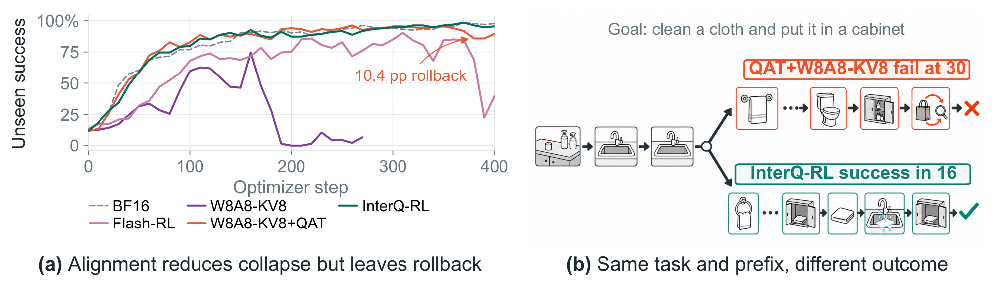
Figure 1 的左图横轴为优化步，纵轴为 ALFWorld 未见任务成功率；灰色虚线是 BF16，紫色是没有对齐的 W8A8-KV8，橙色是加入 QAT 的量化运行，绿色是 InterQ-RL。没有对齐的运行较早塌陷，说明先对齐量化语义确有必要；但橙色曲线在已经学会任务后仍出现回退，图中标注的十点四个百分点对应第两百六十步到第三百八十步。绿色则在后段保持较高水平。右侧使用同一个清洁并收纳布的任务作示例：两臂共享前三个动作后分叉，QAT 一路消耗三十次动作预算仍失败，InterQ-RL 用十六次动作完成任务。这不是对任意任务都节省十四步的统计结论，而是帮助读者理解历史差异如何转化为后续状态和完成能力的一个具体例子。图注还给出全部一百三十四个任务中动作预算耗尽失败的比例，QAT 为百分之十点四五，InterQ-RL 为百分之四点四八，比单个案例更有总体意义。阅读时要把图中的历史区间回退、某个最终检查点、以及后文末六次评估均值分开，不能混用这些口径来放大效果。左图只能先建立“对齐并不充分”的现象，尚不能独自证明前缀校正或支持分配各自的因果作用；后面的共享底座消融才进一步检验这些设计。
论文将这种问题称为交互结构化的执行失配：策略动作的概率因子沿历史保留，而工具反馈改变后续上下文。环境反馈不是模型自己采样出来的策略 token，所以不应把反馈文本也当成策略似然相乘；但是反馈决定后面的条件概率，又不能从模型上下文删除。这一区分对工程实现很具体。训练数据中通常混合系统提示、模型动作、工具输出和奖励标记，如果只按字符串连续位置构造前缀，可能把不该计算的观测概率纳入权重；如果在每次工具调用后简单重置，又会丢掉到达当前状态的早期策略影响。InterQ-RL 通过策略位置掩码同时保留上下文和正确的累积范围。
研究任务仍然是控制量化强化学习的稳定性，而不是提出新的任务奖励、通用 Agent 规划器或更强的模型架构。它在三个模拟交互环境、四个环境与模型组合上测试，涉及四十亿、八十亿与三百亿总参数的模型，其中三百亿模型是激活约三十亿参数的 MoE。不能将这四个设置写成四个不同环境，也不能把模拟任务成功直接外推到真实浏览器或广告预算决策。本文的贡献应当放在相同八位生成底座之上的校正范围和校正分配方式上理解，这样后文与 BF16 的质量比较、与其他校正规则的稳定性比较才有清楚的参照。
从离线推荐和在线学习角度看，本文也提醒我们区分观测条件下的动作评分与日志的生成机制：在一条固定历史上重算当前动作概率，只回答“这个动作在这里有多可能”，并未回答“这个策略会多常走到这里”。但这种联系只是可迁移的建模启发，论文没有直接验证推荐策略或拍卖环境。更保守的使用方式，是先检查自身闭环训练是否存在两条不同精度的策略执行路径，是否能够保存生成器的真实 logprob，以及是否能准确标记动作和观测。如果缺少这些条件，照搬前缀权重并不能自动解决日志偏差。另一方面，若任务只有一次独立输出且没有行动改变后续观测，本文相对当前 token 校正的独特收益也需要重新检验，不能仅凭长文本长度就认定存在同样的交互结构问题。
2. 方法
2.1 对齐生成数据的策略
原文首先处理量化规则的一致性。生成端采用分块 W8A8 线性算子，K、V 以 FP8 E4M3 存储，缩放粒度为每个 token、每个注意力头。学习端保留高精度主参数、梯度和优化器状态，但在前向对应位置执行同样的量化与反量化；缓存路径不仅要统一位宽，还要匹配写入缓存时的量化规则和层内位置。对齐是后续历史校正的基础，不能把两者当成可随意互换的替代方案。 输入是同一检查点和已采样 token，上一步的输出则是两条执行路径下的 logprob，可直接用于下一模块。
符号解释：$x_t$ 是当前策略 token，$h_t$ 是包含历史动作和观测的上下文，$q_{\theta}$ 是正在优化的学习策略，$q_{\mathrm{old}}$ 是生成检查点在学习端的旧策略，$r_{\mathrm{exec}}$ 是低精度执行器的行为策略。前一个比值属于策略更新，后一个属于同一检查点的执行失配。PPO/GRPO 原有裁剪负责前者，InterQ-RL 额外构造的权重负责后者；两种作用不能在实现中混合成一个没有来源说明的概率比。
附录进一步限定了量化范围：线性层的权重缩放覆盖 $128\times128$ 块，激活缩放覆盖 $1\times128$ 块，缩放值以 FP32 存储；词嵌入、语言模型输出头与 MoE 门控不在这些量化线性层之内。KV 写入规则则直接决定了学习器应该在哪个位置模拟数值路径。
符号解释：$x$ 是某个 token、某个注意力头的 K 或 V 向量，$x_j$ 是其分量，$s(x)$ 是独立缩放，$\widehat x$ 是量化并反量化后的值。K 的模拟放在键归一化与旋转位置编码之后，V 放在相应缓存写入位置；学习器采用直通反向。这样匹配的是具体缓存算子，而非仅设置一个八位开关。
符号解释：$m_t$ 是策略位置掩码，$\delta_t$ 是前面定义的执行对数比，$\widehat D_{K3}$ 是非负的经验诊断量。执行器采样条件下，其期望对应 $D_{\mathrm{KL}}(r_{\mathrm{exec}}\Vert q_{\mathrm{old}})$。它用未做前缀累积的 token 对数比衡量残余，和最终损失权重是不同对象；本文将它用于观察执行间隙，而不是直接最小化该诊断值。
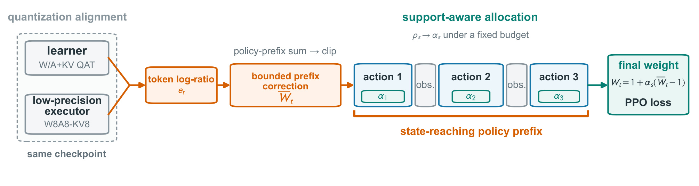
Figure 2 用灰、橙、绿三条链路串起整个训练流程。左侧灰色区域强调学习器与执行器共享检查点，并在权重、激活、缓存路径上先做语义对齐；图中汇合的箭头并不是合并模型参数，而是对同一个已采样 token 的两种概率计算进行比较。橙色部分从逐 token 对数概率比出发，沿着所有早期策略动作累积，再经过边界裁剪形成前缀候选权重。中间三个动作框由观测隔开，橙色括号跨过观测延伸到后续动作，说明历史影响不会在工具回包处重置；灰色观测框则不提供额外策略似然因子。绿色部分为每段动作设置不同保留系数，并把候选权重向恒等权重收缩，最终只乘到 PPO 基础损失上。这个信息流解释了为什么该方法无需另跑一个价值模型或教师：它复用已有的生成端和学习端概率。图也明确了“训练有校正、推理没有额外校正网络”的差别，最终任务评估仍由对应策略执行。需要注意的是，图中的固定预算限制的是权重相对恒等值的平方位移，既不是 GPU 显存预算，也不是环境调用次数；把三者混为一谈会错误地把稳定性方法描述成确定的系统加速器。绿色系数的不同，才是相同候选前缀信息在不同动作上被如何使用的核心。各动作框内的系数并不是独立学习的参数，而是从当前批次的权重统计量解出；下一个批次会重新计算。若出现单个异常前缀，系统既不新增一次生成来修正它，也不直接删掉整条轨迹，而是通过裁剪和向一收缩降低这一校正对已有损失的影响。这种保留原样本、调整使用方式的设计，决定了它更适合已有概率记录完整的训练流水线。
2.2 校正到达当前状态的历史
原文接着从轨迹换测度关系确定校正范围。假设两种策略使用相同任务分布、环境转移和交互协议，且目标轨迹分布相对于行为分布绝对连续，则同一条已实现历史的环境转移因子在似然比中抵消，只剩模型动作概率。这一前提并不表示环境不会受动作影响：恰恰因为动作改变状态，才必须保留早期动作的策略因子。观测仍在后续条件上下文中，只是不作为模型采样因子计入乘积。
符号解释：$\tau_{\le t}$ 是截至位置 $t$ 的已实现轨迹前缀，$P$ 表示策略诱导的轨迹概率，$m_u$ 在模型生成的动作位置取一，在工具反馈等非策略位置取零。右侧第二个等式将联合比值拆成历史因子与当前 token 因子。即使当前 token 因子接近一，历史因子仍可能很大或很小；这正是只看当前动作会遗漏的部分。这两个等式是校正范围的理论依据，不能直接等同于实际优化器使用的最终权重。
符号解释：$\delta_t$ 是执行对数比，$e_t$ 经过数值安全界 $B$ 裁剪，$n_t$ 统计截至当前的策略 token 数，$E_t$ 是仅沿策略位置累积的对数比，$\overline W_t$ 是有界候选前缀权重。论文使用 $B=20$，上下包络系数分别为 $0.025$ 和 $0.05$，边界随策略 token 数平方根增长。与直接相乘的精确比值相比，这一步有意引入有界代理以控制波动，因此不能声称保持了无偏重要性采样。实现时应该按单条轨迹正确重置前缀，而不是跨训练样本延续；观测不增加计数，也不消除之前的动作因子。
2.3 以有效支持分配校正预算
一个动作段是策略掩码连续为一的最大区间。即使两个动作段的候选权重总体偏离恒等值程度接近，偏离也可能只集中在少数 token，或均匀分散到整段。原文因此把“校正多大”与“有多少 token 有效支撑校正”分开。输入是前一模块的候选权重，输出是每个动作段的保留系数。以下定义先给出有效样本量、支持得分和位移，再确定全批次参考强度。
符号解释：$s$ 是动作段，$n_s$ 是其策略 token 数，$\mu_s$、$\nu_s$ 是候选权重的一、二阶矩，$\mathrm{ESS}_s$ 衡量权重集中度，$\rho_s$ 是长度归一化并稳定化后的有效支持，$C_s$ 是相对于一的平均平方位移。$\varepsilon_{\mathrm{mom}}=10^{-8}$ 避免接近零的矩导致不稳定。该表达式针对段长大于一的情形，单 token 段的归一化有效支持为未定义的零除零，附录用同批次其他长度大于一动作段的平均支持替代；诊断样本中有两个这种段。高支持不代表任务奖励更高，它只是权重分布的统计特征；方法没有把奖励大小再次塞入支持分配。
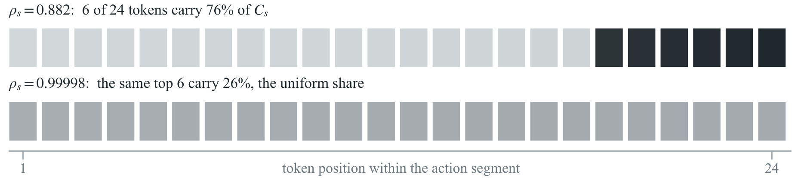
Figure 7 展示两个各含二十四个 token 的实际动作段，横轴按段内 token 位置排列，方块深浅表示该 token 对本段平方位移的贡献份额。上方六个最深方块承担了百分之七十六的位移，而下方相同数量的最大贡献方块只承担约百分之二十六，接近六除以二十四的均匀份额。两段的平均位移分别是零点一二八八八二和零点一二八八八九，几乎无法靠位移大小区分；它们的支持得分却分别约为零点八八二和零点九九九九八。这个例子直接说明只根据位移设一个全局系数，会把统计支撑很不一样的两段看成相同对象。保留更多下方动作段的前缀校正，符合“让更广泛 token 支撑的校正承担预算”的设计直觉。图中颜色并不代表某个 token 的任务重要性，也不是奖励或优势值；深色仅说明平方位移贡献集中，因此不能从图上推断最后六个动作字符就是错误原因。这个配对例子来自对位移近似相等的动作段搜索，作者没有把它当作随机总体分布；它更适合用于解释统计量的可区分性。真正要判断这种区分是否帮助学习，还必须看后文固定同一预算、只改变分配方法的训练消融，而不能用一个漂亮的示意对比替代整体证据。两个条带虽然以相同横轴绘制，却不是时间上相邻的两次动作，也不是同一条轨迹的前后快照。它们只用于控制平均位移这个统计量，观察支持分数能否保留额外信息。因此不能把上条带的低支持解释成后续必然失败，支持优先级和最终奖励之间仍需要由训练结果建立经验联系。
符号解释：$\mathcal S$ 包含一个更新批次的全部动作段，$\mu_g$、$\nu_g$ 按动作段平均，而非按全部 token 加权，$\alpha_g$ 是统一参考保留强度。长动作不会仅因为 token 更多就占更大权重；忽略稳定项和裁剪时，其平方等于全局一阶矩平方与二阶矩之比，对应相对有效样本量的基本形式。
符号解释：$\alpha_s$ 是动作段保留系数，左侧目标偏向高支持段，约束固定最终校正的总平方位移，$c$ 是使预算等式成立的正数，可用一维二分求解。论文算法给出八十次二分迭代。在命题的非退化条件下最优解唯一；如果各段支持相同，则所有系数退化为统一的 $\alpha_g$。这一步重新分配同一校正强度，而不是通过增加整体权重幅度换取效果。 因而其对照实验比直接比较一个强校正与一个弱校正更有解释力。
2.4 嵌入 PPO/GRPO 目标
最终权重把候选前缀权重向一线性收缩，只改变基础 token 损失的系数。奖励和组相对优势来自已采样的执行器批次，并保持停止梯度；当前策略与旧策略的优化比、PPO 裁剪、原有聚合方法都保留。校正对象是量化语义已经对齐后仍存在的执行残余，而不是代替优势估计或重新定义奖励。
符号解释：$\mathrm{seg}(t)$ 返回当前 token 所在动作段，$W_t$ 是最终损失权重，$\ell_t^{\mathrm{base}}$ 是原 PPO/GRPO token 损失，$\operatorname{Agg}_{\mathrm{base}}$ 表示沿用原来的序列与 token 聚合，$\operatorname{stopgrad}$ 阻止权重路径反向传播。由于系数位于零与一之间，最终权重始终位于恒等值与候选权重之间；没有失配时退化为原损失。前缀扫描、分段统计和二分求解复用已有 logprob，不增加模型前向，但仍有张量运算与同步开销，因此“无需额外前向”不能直接改写成“训练零开销”。
3. 实验结果
3.1 统一生成底座与诊断协议
所有设置训练四百个优化步。ALFWorld 和 WebShop 使用 Qwen3-4B，ScienceWorld 分别使用 Qwen3-8B 与 Qwen3-30B-A3B。量化实验共享 W8A8-KV8 生成底座，各环境内部也共享任务编号、初始检查点、提示顺序、轮数上限与评估器。ALFWorld 训练集有三千五百五十三个游戏，展示曲线及端点使用一百三十四个未见验证任务；WebShop 训练一万一千五百八十七条指令，使用官方五百条测试指令；ScienceWorld 的定期曲线采用二百五十九个监测样本，最终第四百步才评估全部一千八百一十九个官方测试变体。因此，ScienceWorld 的 AULC 与最终端点并不来自同一个评估样本集合。
训练使用 verl 与 vLLM，稠密模型每次运行八张 H20，三百亿 MoE 使用十六张。默认每条提示生成八个回答、训练批量十六、学习率为百万分之一，采用固定学习率；序列与 token 的聚合沿用原有配置。ALFWorld、WebShop 的动作上限分别是三十和十五，ScienceWorld 为一百。响应预算包括动作和观测追加的 token，不只是模型输出；ScienceWorld 每个动作还限制为三十二个生成 token。这些约束会影响任务能否完成，也限定了“短轨迹”结果的适用范围。下面先确认失配诊断，再查看最终任务分数，避免把某一个概率统计量自动当作任务质量。
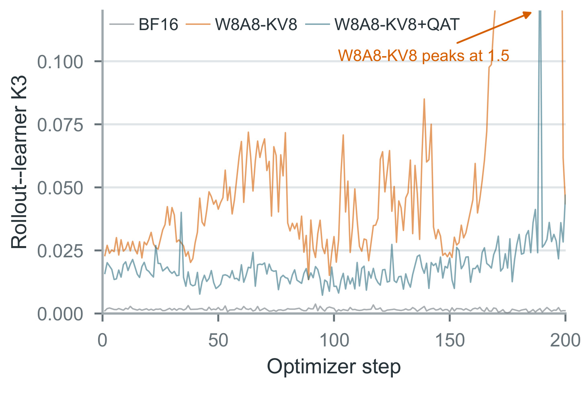
Figure 3 的横轴为优化步，纵轴是执行器与学习器的 K3 失配估计；它比较的是每个检查点上两条数值执行路径，而非两个不同训练阶段的模型质量。未对齐的八位运行波动很大，图中的橙色峰值达到一点五，超出纵轴主要显示范围；加入权重、激活、缓存对齐后，浅蓝曲线明显降低，但仍高于灰色 BF16。正文给出最后二十步的中位数，从未对齐的一点零三降到对齐后的零点零二九，而 BF16 约为零点零零一四。这个对比支持先做量化语义对齐，同时说明残余并未消失。它并没有证明残余全部来自缓存路径，也没有隔离每一种内核差异；正确结论是当前实现下存在对齐后仍可观测的概率间隙。图中对齐曲线的局部尖峰提醒我们，报告一个平均值可能掩盖尾部失配，因此后续前缀权重还需要有界化，而不是直接把所有小概率比相乘。纵轴接近零的灰线仍不是严格恒等，它提供的是当前高精度执行路径的参考量级，提醒读者数值误差并非只有量化运行才存在。
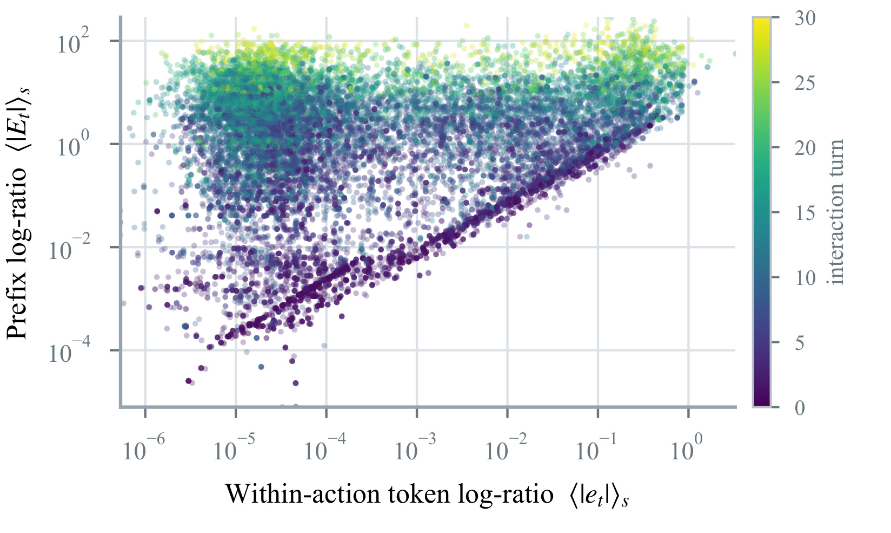
Figure 4 以对数坐标比较段内平均局部对数比绝对值与累计前缀对数比绝对值，右侧色条表示交互轮次。数据来自对齐检查点继续训练的十个连续更新，共一万八千六百八十三个动作段。可以看到，在横轴很小的区域，纵轴仍可达到明显较大的值；随着轮次增加，较亮的点更多出现在较高的历史累积区域。这是“当前动作局部相近仍可能来自失配历史”的直接诊断证据，而不是仅凭概念推导作出的猜测。两轴都是对数比统计量，不是任务成功率，也不是相对基线的倍数提升。散点的颜色和位置展示相关性，尚不能独立证明所有后期失败都由历史失配引起；但它帮助排除一种过于简单的解释，即只要单个动作内部的概率差足够小，长程闭环训练就自然安全。对工程监控而言，这意味着应该同时保留局部和跨动作累计指标，而不是仅以单步 KL 阈值判断量化运行是否稳定。
3.2 最终任务质量与完整训练轨迹
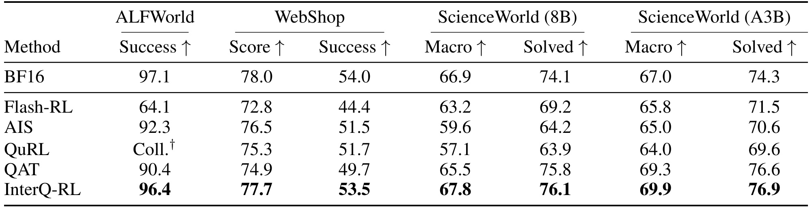
Table 1 每一行是一种完整训练方法，列分为 ALFWorld、WebShop、ScienceWorld 八十亿与三百亿 MoE 四组。成功率和 solved 率要求任务完整完成，WebShop score 和 ScienceWorld macro 则允许部分进展得分，不能把这些列都统一称为成功率。InterQ-RL 在表内所有量化方法中取得最好的点估计：ALFWorld 为九十六点四，对比 QAT 的九十点四；WebShop 得分七十七点七、成功率五十三点五，对比 QAT 的七十四点九和四十九点七；ScienceWorld 八十亿的宏平均和完成率分别为六十七点八、七十六点一，MoE 为六十九点九、七十六点九。与 BF16 对比，前两个环境仍略低，两个 ScienceWorld 设置则略高。因此更准确的表述是量化训练的质量恢复到接近或超过本实验 BF16 参考，而非所有任务都优于高精度。ALFWorld 和 WebShop 取最后六次检查点评估均值，ScienceWorld 是固定最终检查点的完整测试；跨组绝对分数不能直接比较难度。此外，结果中的三百亿总参数与三十亿激活参数应同时保留，不能把稠密八十亿和稀疏激活三十亿简单按总量排序。QuRL 在 ALFWorld 第二百七十八步终止，表中明确没有共同训练时域端点，不应把缺失格当成零后计算平均优势。原文附录仅说明关键三臂在两个环境上的独立种子复核与主结论一致，未给所有列完整多种子区间，因此这些差值仍应理解为作者报告的实验点估计，而不是已经证明普遍显著的提升。从同列比较还能看出恢复程度具有任务差异：ALFWorld 距 BF16 还差零点七个百分点，WebShop 两个指标分别差零点三和零点五；ScienceWorld 的正差则同时出现在部分进展与完整完成指标上。这使结论比只挑一个宏平均指标更扎实，但也不支持跨环境合成一个统一成功率。
表内四舍五入后的 ALFWorld 提升为六个百分点，附录精确值是九十六点三九减九十点四二，等于五点九七个百分点。ScienceWorld 的两个宏平均分别比 BF16 高零点九与二点九个百分点，这不能解释为量化本身提高推理能力，因为这里同时发生了训练方法变化。要判断量化资源收益是否值得，还需要同质量下的墙钟、显存和吞吐实测，本文主表主要回答共同训练预算下的最终任务效果。
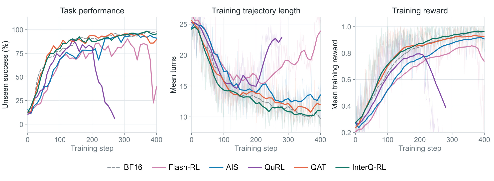
Figure 5 将最终分数放回训练过程。三个面板分别显示未见任务成功率、全部训练轨迹平均轮数和训练奖励，横轴都是训练步。绿色 InterQ-RL 在后期保持较高成功率，奖励稳步上升；QAT 虽能较快学会任务，但后段成功率回落；Flash-RL 后期明显不稳定，QuRL 提前崩溃，AIS 学习较慢且有反复。中间面板中绿色轨迹逐渐缩短，并与较高任务质量同时出现，因此这里的变短更像减少无效交互，而不是简单通过提前停止牺牲完成率。仍需注意，图中间统计全部训练轨迹，而下一张表的 Turns 只统计成功评估轨迹，二者不能拿来逐个数值核对。图中的奖励和轮数还经过十步区间中位数与轻度指数平滑，淡色原始变化仍能提示训练波动，不能把光滑曲线当作无方差证据。正文另举第三百步到第四百步的 QAT 成功率从九十五点五降至八十九点六，和引言图标注的另一时段十点四个百分点回退并不矛盾，它们取的是不同起止点。InterQ-RL 最终单检查点九十五点五，也不同于主表末六次评估均值九十六点四。这个图最有价值的地方，是显示方法收益来自后期稳定维持能力，而不是只选出一个偶然峰值检查点；但要证明更长训练时域仍稳定，还需要超过四百步的额外实验。AIS 在第一百五十步达到六十九点四，而 InterQ-RL 已到八十八点一，说明有些基线的差距发生在学习早期；另一些基线则主要输在后期维持。把这两种模式都归结成最终效果不足，会掩盖部署团队应选择优化收敛速度还是防止后程回退的差别。
3.3 学习速度、成功交互成本与 K3 反例
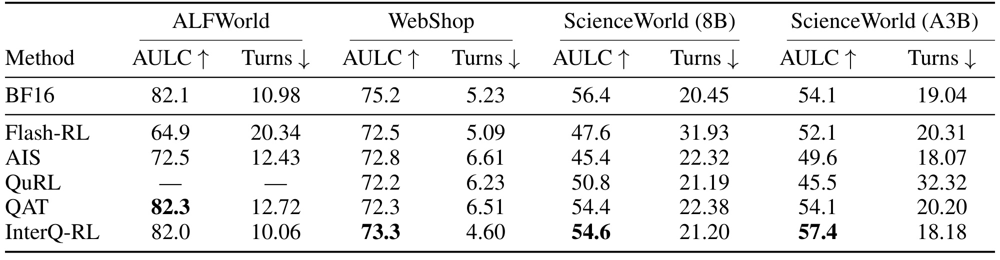
Table 2 的 AULC 是每十步评估曲线做梯形积分后除以共同四百步时域，衡量整个训练阶段的效果；它不是训练秒数，也不是到达阈值所需 GPU 小时。ALFWorld 上 QAT 的精确 AULC 是八十二点二九，InterQ-RL 为八十一点九六，后者略低零点三三，因此不能写成所有设置都学习更快。其他三个环境与模型组合中，InterQ-RL 是最好的量化 AULC：WebShop 七十三点三，ScienceWorld 八十亿五十四点六，MoE 五十七点四。后者超过 BF16 的五十四点一，但 ScienceWorld 的面积来自监测子集，最终完整测试结果应另看主表。Turns 列按最终成功回合取平均，InterQ-RL 在 ALFWorld 从 QAT 的十二点七二降到十点零六，WebShop 从六点五一降到四点六零。这是条件于成功的交互长度，不能直接解释成全部请求平均节省同样比例成本。作者还在两个方法共同解决的一百一十七个 ALFWorld 任务上比较，InterQ-RL 九点六四轮、QAT 十二点七九轮，减弱了成功任务组成不同造成的混淆。ScienceWorld 上它也并非每列最短：八十亿 AIS 为二十二点三二轮，BF16 二十点四五轮，MoE 的 AIS 十八点零七轮比 InterQ-RL 十八点一八略短。因而合理判断是兼顾质量与较短成功交互，而不是单一追求最少动作。以 BF16 作参照，InterQ-RL 在 ALFWorld 的面积接近，而 WebShop 七十三点三仍低于七十五点二，ScienceWorld 八十亿五十四点六也低于五十六点四。精确到两位小数时，ALFWorld 上 BF16 面积为八十二点零七，也略高于 InterQ-RL 的八十一点九六。量化臂内最好与超过高精度参考，是两个不同层次的比较，这张表并没有保证二者总是同时成立。从系统选择角度，较短成功轨迹必须和完成概率一起评价；若失败样本消耗了更长 token 或反复重试，表内这一列就无法覆盖它们的实际资源损失。
动作预算耗尽失败率提供另一面证据：ALFWorld 从百分之十点四五降到百分之四点四八，WebShop 从百分之一点六降到百分之零点四。这一指标包含未成功任务，有助于补充 Turns 的条件分母局限。它仍只覆盖耗尽动作次数这一类失败，不能代表所有失败模式或工具费用；真实系统里每轮工具成本和 token 长度可能不同，减少轮数与降低账单也不是同一件事。
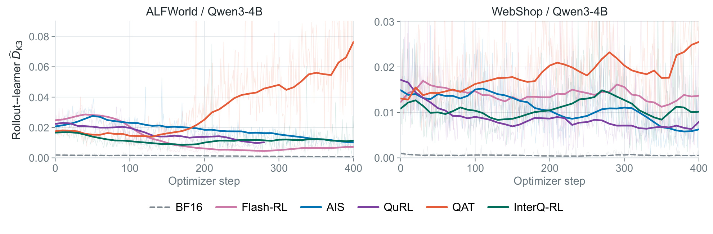
Figure 6 左右分别是 ALFWorld 与 WebShop，纵轴是平滑后的 K3，横轴是优化步。QAT 在训练前段与 InterQ-RL 的差距较小，后段逐渐抬升；InterQ-RL 保持较低且相对平稳的执行间隙。正文给出 ALFWorld 前一百步中位数分别为零点零一五五和零点零一二五，第三百零一步至第四百步则分化为零点零五九八和零点零一一九；WebShop 后段分别为零点零二一零和零点零零八一。这个走势与前文后期任务回退一致，支持校正有助于稳定执行分布。但这些数值在各臂自己的 rollout 上计算，策略已经进入不同状态分布，不能把曲线差异当作完全控制变量的同上下文 KL 比较。更重要的反例是 Flash-RL 的末期 K3 约零点零零七一，低于 InterQ-RL，却只有六十四点一的末六次成功率；QuRL 塌陷时 K3 也会下降。低失配可能只是策略退化后集中在狭窄、简单的输出区域，不代表完成任务的能力更强。因此应把执行间隙与任务成功、奖励、轨迹长度和耗尽失败联合使用，而不是把 K3 作为唯一优化目标。图中紫线提前结束，也保留了崩溃运行实际没有完成四百步的事实。
3.4 前缀范围与支持分配的机制消融
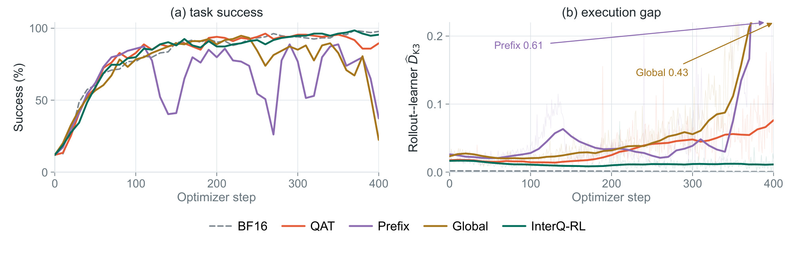
Figure 9 的所有量化臂都使用同一 W8A8-KV8 加 QAT 底座，区别集中在校正规则。Prefix 直接使用有界前缀权重，Global 给所有动作段一个统一系数，InterQ-RL 则按有效支持分配系数。左面板显示前两种方法虽然在中期曾取得较高成功率，但最终跌到百分之三十七点三和百分之二十二点四；绿色方法仍保持百分之九十五点五。右面板中对应的执行间隙在后期明显上升，图上箭头标出超出主要纵轴范围的峰值零点六一和零点四三，避免误以为曲线在顶端被截断后不再增长。这里最有说服力的控制是 Global 与 InterQ-RL 使用相同的动作段归一化平方位移预算，二者差异不能简单归因于整体校正力度更大。它支持“按支持分配比统一收缩更能保持后期稳定”的设计，而不是只支持“前缀比当前 token 好”。同时，Prefix 与 Global 的失败也说明理论上确定了合理历史范围，并不保证直接采用相应权重就会稳定；裁剪之后的统计集中度仍需处理。该消融只在 ALFWorld 展示，尚不能保证所有环境或不同量化位宽下都出现同样严重的回退。真实接入时应检查本系统动作段的支持分布是否有足够差异，若它们几乎一致，命题已说明该方法会接近统一系数，额外分配带来的空间也有限。图中的两种失败基线不是从一开始就无法训练：裸前缀曾在第二百九十步达到八十八点八，统一系数曾在第二百三十步达到九十四点八。若只评估早停峰值，就可能得出校正已经有效的乐观判断；共同四百步时域暴露的后期风险，正是该消融要保留的信息。
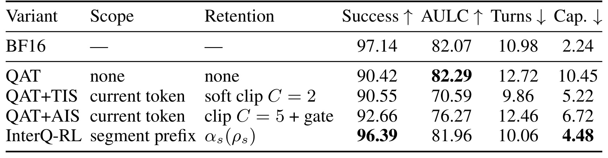
Table 6 进一步排除“只是把 QAT 与已有校正规则组合起来”的解释。QAT、QAT 加 TIS、QAT 加 AIS 和 InterQ-RL 共享对齐底座，表中 Scope 与 Retention 显示前两种补充方法仍只校正当前 token，后者使用动作前缀并按支持保留。末六次成功率从 QAT 的九十点四二小幅升至 TIS 的九十点五五、AIS 的九十二点六六，而 InterQ-RL 达到九十六点三九。与此同时，TIS 与 AIS 的 AULC 分别为七十点五九、七十六点二七，低于 QAT 的八十二点二九；InterQ-RL 为八十一点九六，更接近 QAT 的整体学习水平。Turns 和 Cap 来自第四百步单次评估，不能与成功率的末六次均值共用分母。TIS 的成功轨迹九点八六轮，确实比 InterQ-RL 的十点零六更短，因此不能宣称后者在任何对照中都最省交互；但它的成功率更低、耗尽失败也更高，表现出质量与条件轮数的权衡。InterQ-RL 的耗尽失败百分之四点四八优于两种当前 token 校正的百分之五点二二和百分之六点七二。综合看，该表支持历史范围与支持分配共同带来的质量稳定收益，但没有用完整多环境因子实验分别估计所有模块的独立效应，也没有给出统一端到端训练时长。复现时应同时保留这些不同口径，而不是只抄成功率一列作为验证标准。表中 BF16 的耗尽失败仅百分之二点二四，仍低于 InterQ-RL，因此后者并没有完全抹平所有高精度行为差距。另一方面，QAT 加 AIS 的完成率改善伴随着面积下降，意味着选择某种校正时应先规定关注的是训练期间累计能力还是最终检查点；不同目标可能给出不同偏好，这不应被一个单独排名遮蔽。这些口径的差异来自作者公开协议，本次解读没有将它们重新平均为一个总分。
4. 总结
4.1 我的判断与工程启发
InterQ-RL 最有用的贡献，是把量化执行误差放回闭环数据分布中分析：误差不仅改变当前动作的似然，还通过之前的动作影响当前状态的出现机会。它先明确理论上应保留哪些策略历史，再通过有界前缀与支持预算把理论范围变成可运行的损失权重。固定预算下 Global 仍会回退的消融，比单纯声称“增加了历史信息”更能说明支持分配的作用。对已有多轮强化学习系统而言，价值首先在于提出了一个可检查的故障来源，而不是要求重建整个模型或价值网络。若系统已经保存生成端与学习端 logprob、准确的动作掩码和轨迹边界，就具备比较直接的接入基础。
工程上应优先验证量化规则和统计单位。缓存位宽相同不代表缓存写入语义相同，动作段平均也不同于把所有 token 混成一个整体。前缀扫描必须在轨迹内连续、在样本间重置；工具反馈不进入似然乘积，却继续保留在上下文；最后权重必须停止梯度，避免把校正器无意变成另一条优化路径。这个方法对日志质量的要求，比对网络结构的要求更突出。对于推荐或搜索中的多轮交互学习，可以借鉴状态到达分布与条件动作分布分开监控的做法，但本文没有验证推荐点击、转化或真实在线收益，迁移结论需要明确保留为研究假设。
4.2 局限与后续跟进
当前证据仍有几项重要限制。第一，有界化、平方根包络和段级收缩使实际权重成为稳定性代理，并非原始精确重要性采样权重，因此不能据此宣称恢复无偏梯度或具有普遍收敛保证。第二，实验只有三个模拟环境与四个模型组合，真实工具延迟、动态网页、跨版本服务等因素没有覆盖。第三，作者在附录说明关键三臂于 ALFWorld 和 WebShop 的独立种子复核一致，但其他方法与 ScienceWorld 的更广泛多种子覆盖不足，缺少完整置信区间时不宜将小差距写成稳定显著优势。第四，论文说明不增加模型前向，却没有完整报告所有分段扫描、跨卡统计、二分求解与量化模拟的端到端成本；同样训练步数和相近 AULC 也不等于同样 GPU 小时。第五，当前仅核验到论文的未来开源声明，无法确认实现是否完整公开，也未独立复现这些训练曲线。
后续可以按三个有明确判据的方向推进。其一，在相同检查点、相同上下文上重算两条执行路径，先区分数值内核差异与各臂采样状态分布变化，验证问题确实存在后再接入校正。其二，保留 QAT、裸前缀、统一预算、支持分配四组对照，同时报告末期均值、共同任务成功轮数、全部请求 token 成本和墙钟，检验支持分配是否在本地任务有效。其三，跟踪正式代码与更多位宽、模型及训练种子结果，特别关注长时域或极短动作段下的边界处理。若动作支持差异很小、额外统计开销偏高，统一收缩可能已经足够；只有收益和成本同时可测时，才能判断这项校正是否值得长期维护。还应保存每段位移、支持和最终系数的分布，而不仅是一个全局均值。这样遇到失败时才能区分错误的掩码、少量异常权重与整体校正过弱。若最终质量提升来自某个有限任务子集，也应记录子集构成，避免把任务选择效应误认作普遍稳定性收益。